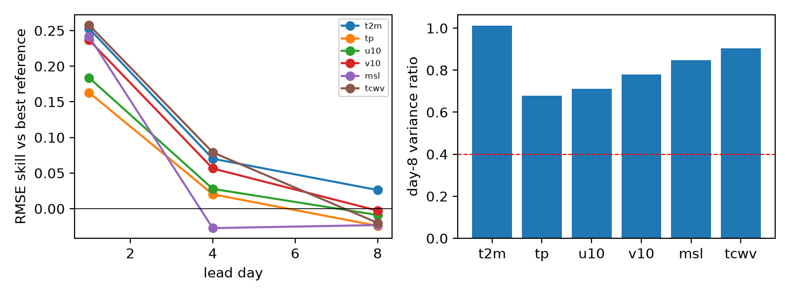
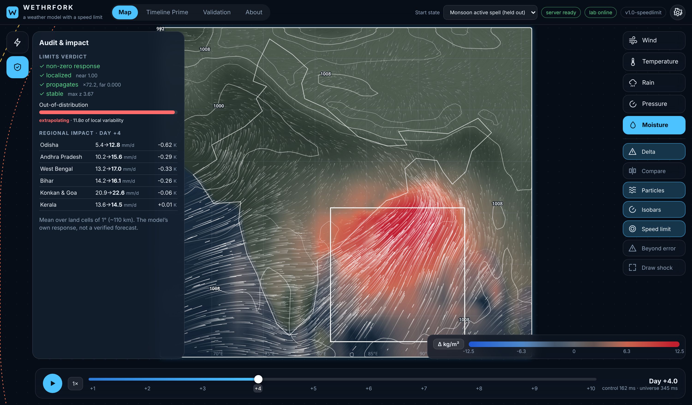
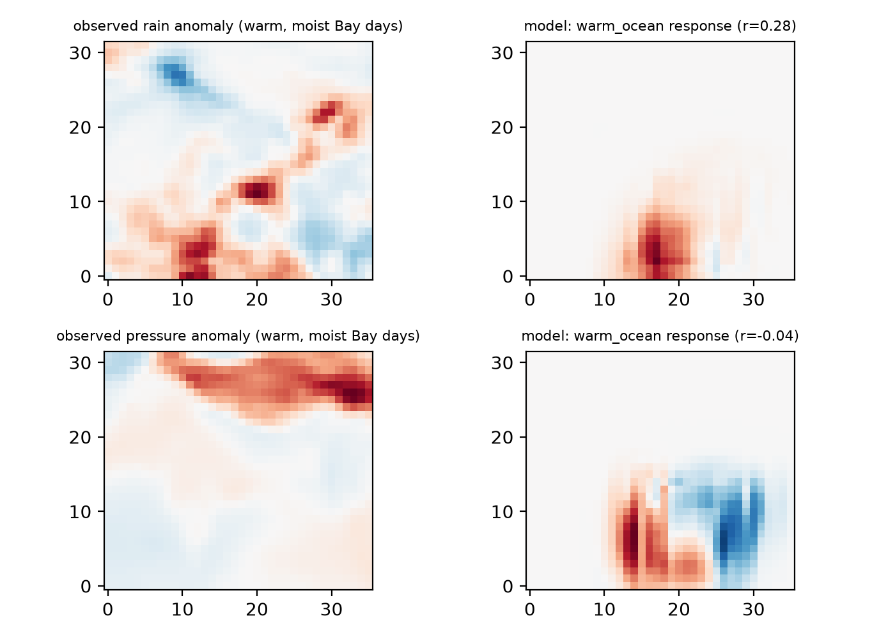
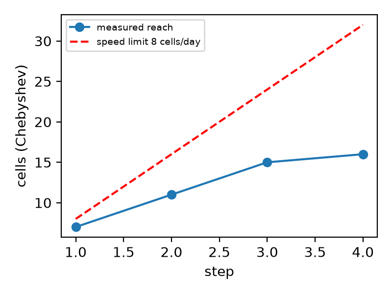
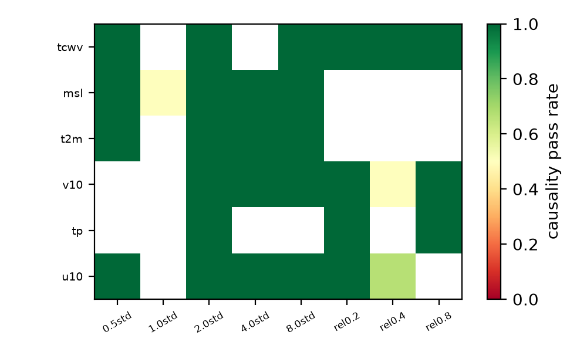

Wethrfork a weather model with a speed limit · Yugaantar DevForge, Track 2 “Multiverse of Monsoon”
Team Return0; · github.com/HARDIKSINGH150206/Wethrfork · model wethrfork-v1.0-speedlimit
USP. Wethrfork is a Climate Digital Twin of India whose shock responses are causal by construction: the network
cannot move a change more than 8 grid cells (about 900 km) per simulated day, so a shock stays local, then spreads outward at a bounded speed.
On held-out data it beats both persistence and climatology, and every shock is audited live with the organisers' own causality checks.
Model design and architecture
3 days × 6 channels (physical units)
→
anomalies vs 366-day climatology; log rain
→
Skill network: advection (≤4 cells/day) + local 3×3 CNN
Served formula: out = clamp( PP(Blend(skill)) + limit[ D(shocked) − D(base) ] ). A control forecast plus a perturbation model, as in
tangent-linear forecasting. Both networks share one architecture (about 0.39 M parameters each, CPU, deterministic). Each step is
residual on the last day: a semi-Lagrangian advection step whose displacement vector is capped at 4 cells/day with a smooth tanh,
then three 3×3 convolutions (reach 3) with replicate padding. No attention, pooling, spatial normalisation, FFT or U-Net, so nothing can reach
further than 4 (advection) + 1 (bilinear) + 3 (convolutions) = 8 cells per step. A zero shock skips the shocked run, so the output is bit-identical to the unshocked call.
Contract table: criterion, guarantee, evidence (2021, held out; calibration fitted on 2020)
Judge criterion
Architectural guarantee
Measured evidence
Shock local on day 1, then spreads, never teleports
CPU, 4 threads, artifacts inside the repo, SHA-256 checked at start-up
10-step shocked call 0.18 s with JSON; ready in 3 s; repo scan 15/15
Drift and blur
Drift. The network is trained on a curriculum of 1, 4 and 8 unrolled days with input noise, so it learns from its own errors. Beyond a week
the atmosphere is chaotic: the skill head is then about as good as climatology (day-8 skill −0.01) and we say so instead of hiding it.
Blur. MSE-trained models smooth rain. We keep rain in log space, weight wet cells 3×, and tune the rain post-processor on a per-window
score that penalises both false drizzle and missed events. An earlier quantile-matching version looked better on pooled error but inflated rain variance
and cost about 0.05 of mean skill, so we dropped it.

Held-out 2021: RMSE skill by lead and channel (left); day-8 variance ratio, dashed line = judge floor 0.4 (right).
Failure modes (what we know does not work)
Jet transport. The Arabian Sea low-level jet blows at 12–15 m/s (10–13 cells/day), faster than our 4-cell advection cap; jet-driven transport is under-represented.
Responses are learned dynamics, not validated physics. Timing and locality are guaranteed; sign and size are not. Natural experiment (60 warm, moist Bay days): rain response has the same sign as the observed composite (r = 0.28); pressure does not match (r ≈ 0). Example: a monsoon-stall shock first dries the west coast (days 1–2), then raises rain from day 4, the same sequence seen after naturally weak Arabian Sea flow in the data (a break-then-revival cycle): a learned correlation, not a proven intervention effect.
Extremes. The official warm_ocean shock is about 11.8σ of local variability (out of distribution); it passes, but fuzz causality is lower for wind shocks (u10 92%, v10 86%) and for 40%-of-current-value wind or moisture shocks.
Grid and edges. 1° daily fields cannot hold a cyclone core; energy that leaves the domain is lost, so shocks at the edge propagate less.
Data: modified ERA5 reanalysis (Hersbach et al. 2020), Copernicus Climate Change Service, via Google WeatherBench 2 (CC BY 4.0). Everything built during the event; no lookup of past weather; calibration files are statistics with no dates.
A multiverse you can trust visualisation and impact use case
Live from our own forecast server: nothing is pre-rendered, and it works with Wi-Fi off.
Dashboard: a weather map you can fork, audit and swipe

Map view on a held-out monsoon window after forking a warm Bay of Bengal (+3 K, +15% moisture): the delta of column water vapour at day +4 over live wind particles and isobars.
White box = the shock; dashed rings = the judge’s radius (3 + 8·day) and our hard reach (8·day). Left: the official causality checks run live on the shock, the out-of-distribution meter, and regional impact.
Map (Windy-style): wind, temperature, rain, pressure and moisture layers with live particles, isobars, point forecasts per universe, and a bottom timeline. Beyond a weather map: delta, a swipe compare of control against universe, draw a shock by dragging a rectangle, and a sensitivity overlay showing where a value comes from.
Timeline Prime (forecast against reality with error maps), Validation (held-out skill, gate, fuzz, natural experiment and a live light-cone test) and About. A judge’s new shock is answered in about 0.3 s.
Impact use case: a state disaster officer
Question: if the Bay of Bengal runs warm, where does the monsoon rain shift in the next four days? Same held-out window, warm Bay shock,
land cells only, day +4 (model output, not a verified forecast of a real event):
Region
Control rain
Warm-Bay rain
ΔT
Odisha
5.4 mm/day
12.8 mm/day
−0.62 K
Andhra Pradesh
10.2
15.6
−0.29 K
West Bengal
13.2
17.0
−0.33 K
Bihar
14.2
16.1
−0.26 K
The shift is largest next to the shock and fades with distance; the officer can fork further shocks (monsoon stall, heat dome) and compare in seconds.
Cells are 1° (about 110 km); the forecast error maps (sigma_err) are measured on held-out 2021 and shipped for the dashboard.
Not built: probability-of-exceedance cards and crop-stress indices.
Natural-experiment check

Day-2 rain (top) and pressure (bottom): observed anomaly after warm, moist Bay days (left) versus the model’s warm_ocean response (right). Each panel has its own symmetric colour scale. We show it because it only partly agrees.
Why the speed limit is real

Light-cone test: a one-cell change measured after 1–4 steps never exceeds 8 cells per step.
Stress test

60 random shocks: 100% valid, 95% causal. White = combination not sampled.
Engineering
Offline, CPU-only, deterministic; artifacts (about 21 MB) are in the repo and hash-checked. Verified from a clean clone in a no-network, read-only, 4-CPU, 6 GB container.
Network and ridge trained on 2005–2019; calibration fitted on 2020, graded on 2021, then refit on 2020–2021 (network unchanged). Reported skill is the held-out number. make artifacts reproduces it; CI runs 37 tests and the official repo scan.
Honest limits: day-8 skill is about climatology; pressure response unvalidated; impact cards show mean change, not probabilities.
Wethrfork v1.0 · related work: semi-Lagrangian advection in learned weather models (Learning to Advect); tangent-linear perturbation forecasting.